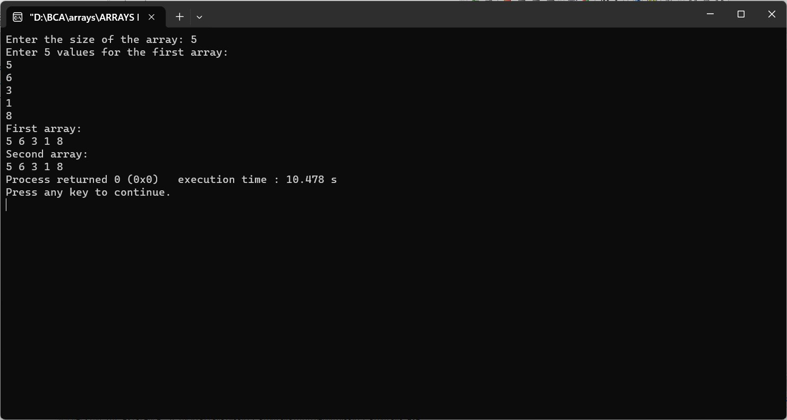

Enter an array from user and copy the array into second array
#include
int main() {
int size;
printf("Enter the size of the array: ");
scanf("%d", &size);
int arr1[size];
int arr2[size];
printf("Enter %d values for the first array:\n", size);
for (int i = 0; i < size; i++) {
scanf("%d", &arr1[i]);
}
for (int i = 0; i < size; i++) {
arr2[i] = arr1[i];
}
printf("First array:\n");
for (int i = 0; i < size; i++) {
printf("%d ", arr1[i]);
}
printf("\nSecond array:\n");
for (int i = 0; i < size; i++) {
printf("%d ", arr2[i]);
}
return 0;
}
